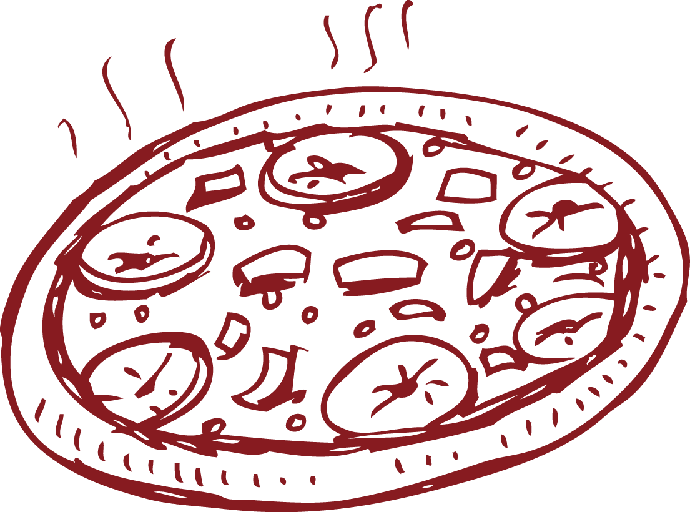

ТИП
или "Традиционна Италианска Пица" е пицария в центъра на гр. Сливен, която предлага пици и тестени продукти по оригинална италианска рецепта. Зад продуктите на
ТИП
стоят професионализма и дългогодишния опит на главния готвач - Марко.

Опитайте нашите специалитети